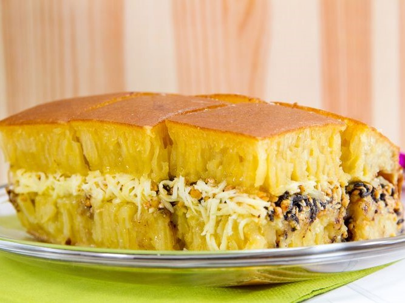

Daftar Wisata Kuliner
Lapis Martabak

Menjual berbagai rasa dan variasi martabak. Di Indonesia ada dua jenis martabak, yaitu martabak asin/telur yang terbuat dari campuran telur dan daging serta martabak manis, yang biasanya di isi coklat dan keju. Berbeda dengan martabak telur, martabak manis adalah sejenis kue atau roti isi selai yang biasa dapat dimakan sebagai cemilan atau makan kenyang.